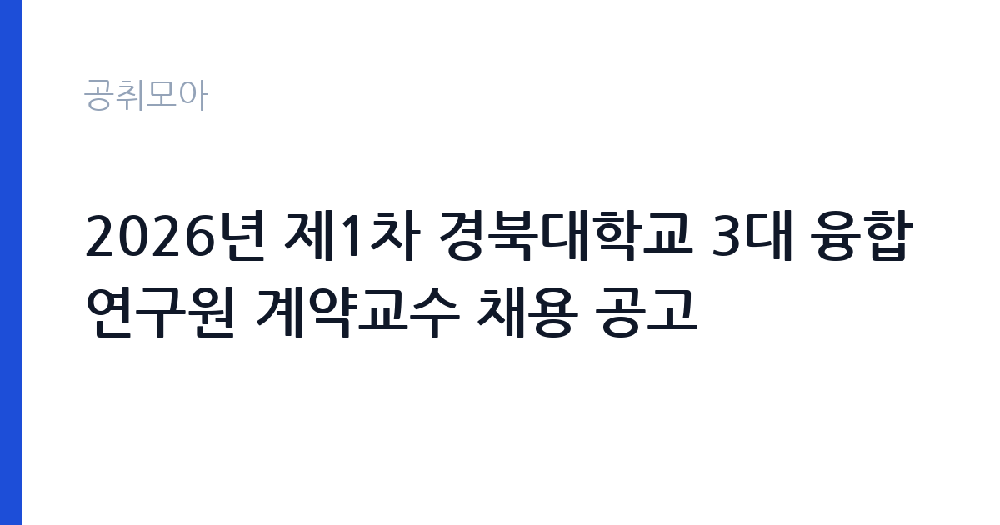

[국가기관] 2026년 제1차 경북대학교 3대 융합연구원 계약교수 채용 공고
경북대학교 · 대구 · 마감 2026-11-02 (D-12) · 출처 나라일터

한눈에 보는 모집 조건
| 기관 | 경북대학교 |
|---|---|
| 공고명 | 2026년 제1차 경북대학교 3대 융합연구원 계약교수 채용 공고 |
| 고용형태 | 정규직 |
| 근무지 | 대구 |
| 게시일 | 2026-10-21 |
| 마감일 | 2026-11-02 (D-12) |
지원자격, 이렇게 읽으세요
- 계약교수 1명
- 접수 ~2026-11-02 마감
- 세부 조건은 원문 공고문 확인
정규직 채용은 기간의 정함이 없는 근로계약을 전제로 합니다. 수습 기간을 두고 평가한 뒤 정규직으로 확정하는 절차가 일반적이며 기관의 인사 규정과 임금 체계를 적용받습니다. 이번 공고는 경북대학교에서 직접 진행하는 자체 전형으로, 응시자격과 제출서류는 공고문에 항목별로 제시됩니다. 연구직은 전공과 학위가 가장 중요한 기준입니다. 석사 이상을 요구하는 공고가 많고, 특정 전공을 명시하는 경우에는 유사 전공 인정 범위를 확인해야 합니다. 관련 분야 연구 경력과 논문 실적을 우대하며 실적은 증빙 자료로 제출해야 합니다. 연구 과제 참여 이력과 데이터 분석 도구 활용 능력도 평가 대상입니다. 채용 조건과 처우는 공고문에 명시되어 있으므로 원문을 확인하십시오. 서류는 접수 마감 이후 보완이 되지 않으므로 자격 요건과 증빙 서류를 마감 전에 모두 갖춰야 합니다. 공고문에 명시된 우대 사항은 해당 여부를 확인해 증빙을 첨부해야 가점이 반영됩니다. 우대 사항에 해당하면 증빙을 반드시 첨부해야 하며, 누락하면 가점 없이 평가됩니다.
이 공고의 포인트
이 공고의 첫 번째 포인트는 고용 형태입니다. 수습 기간 평가를 통과하면 기간의 정함이 없는 신분이 되어 고용이 안정됩니다. 두 번째는 업무 범위가 명확하다는 점입니다. 연구직 직무로 채용되므로 배치 이후 담당 업무가 크게 흔들리지 않습니다. 세 번째는 근무지입니다. 대구 지역 근무로 수도권 공고에 비해 지원자 분포가 넓지 않아 상대적으로 경쟁이 분산되는 경우가 있습니다. 같은 기관의 다른 공고와 접수 기간이 겹치므로 중복 지원 가능 여부를 확인해야 합니다. 같은 직무로 함께 올라온 공고 10건 가운데 마감이 중간에 위치하므로 다른 공고와 일정이 겹치는지 확인하십시오. 다만 선발 인원이 1명으로 많지 않아 자격을 갖춘 지원자가 몰리면 경쟁률이 높아질 수 있습니다.
전형은 어떻게 진행되나
채용 절차는 공고문에 안내된 순서대로 진행되며, 서류 접수 마감 후에는 추가 접수나 서류 보완이 이뤄지지 않는 것이 원칙입니다. 서류심사에서는 응시자격과 제출서류의 형식 요건을 기계적으로 확인하므로, 경력 증명서의 기간과 직무 내용이 공고의 요건과 정확히 맞아야 합니다. 면접은 지원자 수에 따라 집단면접과 개별면접으로 나뉘고, 직무 관련 질문과 상황 대응 질문이 함께 나옵니다. 합격자 발표는 개별 통보 또는 홈페이지 게시로 이뤄지며 이후 임용 절차가 진행됩니다. 동점자 처리 기준이 공고문에 명시되어 있으니 배점 항목을 미리 확인해 두십시오.
원문에서 확인한 전형 방식
2026년 제1차 경북대학교 3대 융합연구원(기초학문, 첨단기술, 바이오) 계약교수 채용을 다음과 같이 공고하오니 많은 지원 바랍니다. ○ 모집분야 : 행정업무 ○ 선발직급 : 계약교수 1명 ○ 고용형태 : 기간제 ○ 자격요건 : 공고문 참조 ○ 접수기간 : 2026. 10. 21.(수) ~ 11. 2.(월) ○ 응시방법 : E-mail 접수(knubasic1@knu.ac.kr) ○ 문의처 : 053-950-3963 ※ 자세한 사항은 첨부된 공고문을 확인하시기 바랍니다. 2026년 10월 21일 경북대학교 3대 융합연구원장
이런 분께 추천해요
- 관련 전공 석사 이상 학위를 가진 분
- 연구 과제 수행과 보고서 작성 경험이 있는 분
- 데이터 분석 도구를 실제로 활용할 수 있는 분
지원 전 체크리스트
- 응시자격 요건과 경력 기준을 충족하는가 — 경력은 증명서로 입증해야 합니다
- 수습 기간과 정규직 전환 조건을 확인했는가
- 제출서류 목록을 모두 준비했는가 — 누락 시 서류 단계에서 탈락합니다
- 접수 마감 2026-11-02 이전에 접수 방식을 확인해 제출했는가
모집 일정과 제출 타이밍
2026-10-21에 공고가 올라왔고 접수는 2026-11-02까지입니다. 남은 기간은 12일이며, 이 기간에 자격증 사본과 경력증명서, 주민등록등본 같은 기본 서류를 모두 준비해야 합니다. 경력증명서는 발급에 며칠이 걸리는 경우가 있으니 가장 먼저 신청하십시오. 접수는 온라인과 우편·방문으로 나뉘는 경우가 많고, 우편 접수는 도착 기준으로 판정되므로 마감일 소인만 믿으면 안 됩니다. 면접 일정은 서류 발표 후 개별 통보되므로 제출 후에도 연락을 받을 수 있도록 유지해야 합니다. 제출 서류는 공고문에 적힌 순서대로 정리하면 담당자가 확인하기 쉬워 누락이 줄어듭니다. 대구 근무지는 도심 접근성이 좋은 편이지만 시설에 따라 외곽 배치가 있을 수 있습니다. 마감까지 2주 안팎이 있어 준비할 시간은 있지만 미루면 촉박해집니다. 선발 인원이 한두 명 수준이라 지원자 개개인의 서류 완성도가 그대로 평가에 반영됩니다.
직무 이해하기: 국가기관
교육기관은 학교 교육과 교원 연수, 교육 행정을 담당합니다. 교육청은 관내 학교를 지원하고, 대학은 학사와 연구, 학생 지원 업무를 운영합니다. 예산과 인사 규정이 교육부 지침과 자체 규정을 함께 따르므로 절차가 엄격합니다. 연구직은 정책이나 기술 과제를 설계하고 데이터를 수집·분석해 결과물을 만드는 일을 합니다. 문헌 검토와 조사 설계, 통계 분석, 보고서 작성이 기본 주기이고 과제에 따라 현장 조사나 실험이 붙습니다. 연구 결과를 논문이나 정책 제안으로 정리하고 대외 발표와 학술 교류도 업무에 포함됩니다. 계약 기간이 정해진 과제 기반 채용이 많아 수행 과제와 성과 목표를 입사 초에 확정하는 경우가 일반적입니다. 업무는 혼자 처리하기보다 부서 단위로 나눠 진행되므로 담당 구역과 협업 범위를 입사 초에 확인하는 것이 중요합니다. 업무 매뉴얼과 지침이 문서로 정리되어 있어 절차를 익히면 반복 업무는 빠르게 손에 붙습니다.
자기소개서 작성 팁
연구직 지원서는 연구 역량을 구조적으로 보여줘야 합니다. 수행 과제, 사용한 방법론, 도출한 결과와 기여도를 한 문단씩 정리하십시오. 지원 기관의 사업과 본인 연구를 연결하는 부분이 특히 중요합니다. 채용 후 하고 싶은 연구 주제를 구체적으로 제시하면 준비도가 드러납니다. 구성은 지원 동기, 직무 경험, 기여 방안 순서가 무난합니다. 지원 동기는 경북대학교의 사업 중 본인이 관심을 가진 부분을 한 가지로 좁혀 서술하고 추상적인 표현은 줄이십시오. 직무 경험은 담당했던 업무와 규모, 결과를 수치로 제시하면 설득력이 올라갑니다. 기여 방안은 입사 후 첫 3개월과 1년 계획으로 나눠 쓰면 준비도가 드러납니다.
면접 준비 포인트
면접은 연구 경험과 방법론에 대한 질문이 중심입니다. 본인이 수행한 연구에서 가설을 어떻게 세웠고 어떤 방법으로 검증했는지 구체적으로 답해야 합니다. 연구 결과가 실제 정책이나 사업에 어떻게 쓰일 수 있는지 묻는 질문도 자주 나옵니다. 사용 가능한 분석 도구와 데이터 처리 경험을 명확히 밝히십시오. 답변은 상황, 판단, 조치의 순서로 정리하면 전달이 분명해집니다. 모르는 질문에는 모른다고 밝히고 확인 방법을 제시하는 편이 억지 답변보다 낫습니다. 마지막에는 근무 의사와 함께 2026-11-02 이후 일정에 언제든 응할 수 있다는 점을 전달하십시오. 모르는 질문에 추측으로 답하면 감점 요인이 되므로, 확인 후 답하겠다고 밝히는 편이 안전합니다.
급여·근무조건 읽는 법
연구직의 보수는 채용 신분에 따라 크게 달라집니다. 공공기관 연구직은 기관의 연봉제 또는 직급별 임금표를 적용받고, 계약직 연구원은 계약 기간과 연봉 총액이 개별로 정해집니다. 과제 기반 채용은 인건비 예산 범위에서 연봉이 결정되므로 동일 직급이라도 과제에 따라 차이가 납니다. 2026년 최저임금은 시급 10,320원, 월 환산 2,156,880원입니다. 구체적인 금액과 성과급 조건은 공고문에서 확인하십시오. 2026년 적용 최저임금은 시급 10,320원, 월 환산 2,156,880원(주 40시간·209시간 기준)입니다. 고용노동부 고시 제2025-47호로 확정된 금액입니다. 공고문에 금액이 제시되지 않은 항목은 원문 보수표나 처우 설명에서 확인해야 하며 확인되지 않은 수치는 쓰지 않는 것이 원칙입니다. 비교할 때는 월 급여뿐 아니라 상여·명절휴가비·복지포인트·초과근무수당까지 포함한 연간 총액으로 계산하십시오. 기간제라면 계약 기간 동안의 총액을, 무기계약이라면 호봉 상승과 정년까지의 누적 소득을 기준으로 판단하는 편이 정확합니다.
자주 묻는 질문
- 선발 인원은 몇 명인가요?
공고문 기준 1명입니다. 직종별로 인원이 나뉘는 경우가 있으니 모집분야 항목을 함께 확인하십시오. - 근무지는 어디인가요?
대구 지역의 경북대학교 소속 근무지입니다. 세부 주소와 출퇴근 조건은 원문 공고문에서 확인할 수 있습니다. - 보수는 얼마인가요?
채용 신분(정규직)과 기관 임금 규정에 따라 정해지며 구체적인 금액은 공고문 처우 항목에 제시됩니다. 금액이 공개되지 않은 경우에는 원문의 보수표를 확인하십시오.
함께 보면 좋은 공고
[국가기관] 2026년 남부지방산림청 제3차 공무직근로자(산불재난특수진화대원) 채용 공고 — 마감 2026-10-29[국가기관] 대전지방공소청 2026년 제1회 공무직근로자(사무원) 채용시험 시행계획 공고 — 마감 2026-10-30[국가기관] 2026년도 제1회 용인우체국 공무직 우체국소포원 채용 공고 — 마감 2026-10-30출처: 나라일터 공개정보를 바탕으로 공취모아가 정리한 안내글입니다. 모집 조건·일정은 변경될 수 있으니 지원 전 반드시 원문 공고문을 확인하세요. 본 글은 정보 제공용이며 합격을 보장하지 않습니다.